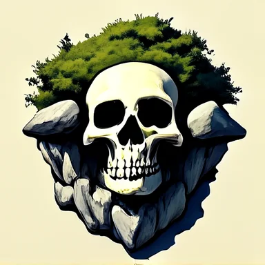
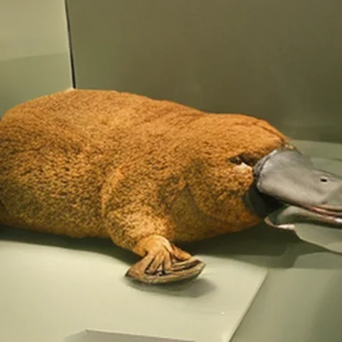
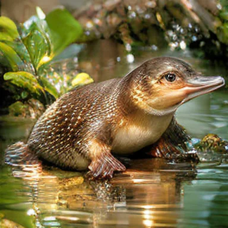
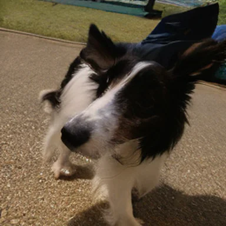
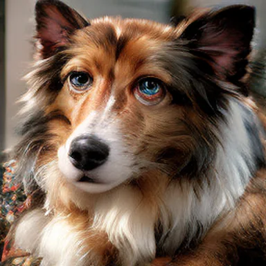
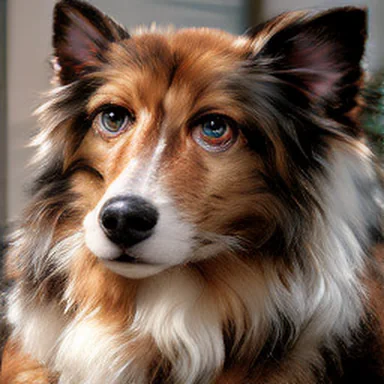
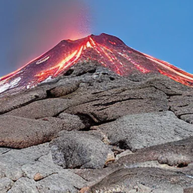

It reweights the base model
The target multiplies the base density by $e^{\lambda r}$. Samples with high reward become more likely, and two samples with equal reward keep the same relative density.
NeurIPS 2026 · Spotlight
WTF?!1University of Oxford · 2Carnegie Mellon University
†Project lead · *Equal contribution
Correspondence: abbas.mammadov@stats.ox.ac.uk · jerryhua@andrew.cmu.edu
Text-to-image

ImageNet-256






Reward fine-tuning aims to update a pre-trained flow-based generative model to improve the downstream reward of its generated samples. Existing methods typically formulate this problem as sampling from a reward-tilted distribution, the solution to a KL-regularized reward-maximization problem. Here, we introduce an optimal transport regularizer built directly from the pre-trained drift. Unlike KL reward tilting, the resulting objective transports individual samples toward higher reward rather than reweighting the base distribution.
We show that the resulting problem is equivalent to a deterministic optimal control problem on the flow. Given a pre-trained flow map, this equivalence yields a simulation-free reinforcement learning algorithm for fine-tuning generative flows. We call the resulting framework Wasserstein-Tilted Flow Maps (WTF), the first end-to-end fine-tuning recipe native to flow maps. The output is a fine-tuned flow map that retains strong reward-aligned performance at few-step inference budgets without post-hoc distillation. Experiments on ImageNet-256 and text-to-image show that WTF achieves higher reward with comparable or higher diversity than baselines, while requiring up to 280× less training compute.
More broadly, we argue that accelerated samplers such as flow maps are essential infrastructure for efficient post-training, and that the dominant KL-regularized formulation is only one of many choices worth revisiting.
Reward fine-tuning updates a pre-trained flow model so that its samples score higher under a reward $r$, such as a human preference score, while staying close to the pre-trained model. Rewards are only defined for complete samples, so each update requires rollouts from the current model.
The standard formulation, KL reward tilting
$$\tilde\rho_1=\arg\max_{\nu}\ \lambda\,\mathbb{E}_{\nu}[r]-\mathrm{KL}(\nu\,\|\,\rho_1),\qquad \tilde\rho_1(x)\propto e^{\lambda r(x)}\,\rho_1(x)$$The target multiplies the base density by $e^{\lambda r}$. Samples with high reward become more likely, and two samples with equal reward keep the same relative density.
The pathwise KL is tractable for diffusions, so existing methods convert the flow into a diffusion, fine-tune it with many-step stochastic rollouts, and convert it back. These procedures cannot exploit the accelerated transitions of flow maps, which jump between any two times of the flow in one network evaluation.
Is there an efficient framework for direct end-to-end fine-tuning of a deterministic flow map?
WTF replaces the KL term with a cost that measures how much the pre-trained flow must be steered. Fine-tuning then becomes a deterministic control problem, which a pre-trained flow map lets us solve without simulating rollouts. The result is simulation-free reinforcement learning for flows.
Reward fine-tuning maximizes expected reward over a terminal distribution $\nu$. The regularizer $\mathcal R$ penalizes departure from the pre-trained model.
$$\tilde\rho_1=\arg\max_{\nu}\ \lambda\,\mathbb{E}_{x\sim\nu}[r(x)]-\mathcal{R}(\nu).$$The choice $\mathcal{R}(\nu)=\mathrm{KL}(\nu\,\|\,\rho_1)$ recovers the reward tilt. We use a transport regularizer from the prior $\rho_0$ to $\nu$, with a cost defined by the pre-trained drift $b_t$. The cost $c_b(x,y)$ is the least steering effort needed to move from $x$ to $y$ while following $b_t$.
With $b\equiv 0$, the regularizer reduces to $\tfrac12 W_2^2(\rho_0,\nu)$.
The problem splits into a separate choice for each starting sample.
$$\sup_{\nu}\Big\{\lambda\,\mathbb{E}_{\nu}[r]-\mathcal{T}_b(\rho_0,\nu)\Big\} =\mathbb{E}_{x\sim\rho_0}\Big[\sup_{y}\big\{\lambda\, r(y)-c_b(x,y)\big\}\Big].$$Each sample moves to the endpoint with the best tradeoff between reward and steering cost. This transport can change the relative density of points with equal reward, which KL tilting preserves.
For a standard Gaussian base and a Gaussian reward bump, both optimal distributions can be computed directly, without training or sampling. The reward has width $2.25$ and is centered at $K$. At the paper's fixed reward scale, WTF achieves higher expected reward, with the gap increasing as the reward moves farther from the base mean over the tested range.
Base $\mathbb E[r]$
–no fine-tuningKL tilt $\mathbb E[r]$
–WTF $\mathbb E[r]$
–Both curves are computed in your browser with the procedure used in the paper. Nothing is sampled.
The endpoint cost $c_b$ requires optimizing over trajectories. We use an equivalent deterministic control formulation to train the flow map through policy iteration.
The control $u_t$ modifies the pre-trained drift $b_t$, with a quadratic penalty on its magnitude. This problem has the same optimal value as the transport-regularized objective. An optimal control $u^*$ produces the Wasserstein-tilted terminal distribution through the drift $b_t+u^*_t$.
The value $V^u_t(x)$ is the terminal reward minus the remaining control cost along the trajectory starting from $x$ at time $t$. The optimal control satisfies $u^*_t=\nabla_x V^*_t$. We regress the trainable control onto $\nabla_x V^{\bar u}$ for a frozen reference $\bar u$, then update the reference. Each round improves the objective until the fixed point, which is the optimal control.
A flow map predicts the state at a later time in one evaluation. We use these transitions to estimate the value and its gradient without numerically integrating the full future trajectory.
A learned critic predicts the value in one evaluation. Differentiating the critic gives an approximate value gradient.
A numerical solver generates the trajectory in $T$ steps. Backpropagation differentiates through those steps to compute the value gradient.
Two flow-map transitions produce $x_\tau$ and $x_1$ from $x_t$. Differentiating the resulting value estimate gives the value-gradient target.
Sampling $\tau$ uniformly from the remaining time interval converts the integrated control cost into a single-sample Monte Carlo estimate. The flow map supplies the intermediate state $x_\tau$ and terminal state $x_1$.
For the flow map of the reference dynamics, this estimator is unbiased. Its only randomness comes from sampling the time $\tau$.
The diagonal loss fits the controlled drift to the value-gradient target. Off-diagonal self-distillation trains the flow map to remain consistent with that drift and supplies on-policy states for subsequent updates. The frozen reference $\bar w$ and regression targets are held fixed when updating $\hat w$.
One training step of WTF
At its fixed point, training recovers the optimal controlled drift together with its flow map.
WTF achieves higher reward with comparable or higher diversity on ImageNet-256 and text-to-image, while retaining few-step inference with the same fine-tuned checkpoint. We fine-tune DMF-XL/2 and TiM-T2I using HPSv2 as the reward. Both image experiments use the Euclidean reward gradient, which omits the flow-map Jacobian from the reward term while preserving the generated endpoint.
The same fine-tuned checkpoint generates samples at each inference budget. Within each row, the WTF samples use the same initial noise and conditioning.
@article{mammadov2026wtf,
title={WTF?! Simulation-Free Reinforcement Learning with Wasserstein-Tilted Flow Maps},
author={Mammadov, Abbas and Huang, Jerry Y and Lin, Justin and Kaushik, Partha and Shah, Sheel and Nair, Kartik and Teh, Yee Whye and Boffi, Nicholas M},
journal={arXiv preprint arXiv:2609.27033},
year={2026}
}